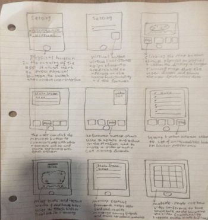

Sports Circle was an application designed by a team of 4 UCI students including myself. The goal of this project was to design an application that would benefit "Wellness" whether that be from the physical or mental perspective.
Problem Statement:
Our problem statement went through many iterations, as we delved deeper and deeper into the design and the process of finalizing said design, our problem statement evolved. It served as our guide to extracting information, interviewing members of our target audience, but most importantly, it was the basis of the entire project.
Wireframes
After we had reached a basic version of our problem statement, we needed to initiate the design. It was important at this stage to create Wireframes of our applications, the goal was to eventually create user stories, and even begin drafting the interview script once we had enough of the UI/UX designed.
The wireframes were really our first design iteration. As a group, we sketched our own wireframes individually, and the different perspective that each member brought to the table in the graphic design of our application helped us make informed decisions before our mid fidelity images. From our wireframes, we examined what made sense from the user perspective, and what would be too convoluted. We wanted to make our app accessible and easy to navigate, but we also wanted to serve a basic and powerful set of features to the user.
Interviews and Storyboards
Once we had come up with a set of features that we wanted to serve to the users, we needed to find whether or not these features would actually be used. What we had up until this stage was all still in the minds and visions of the people involved in the design. The true mark would be our interviews. By interviewing users, our aim was to find what features they would like to see based on certain criteria such as, whether or not they have used an application like this, what they liked about it, what they didn't, etc.
Using our wireframes to create more distinct questions, we crafted an interview script to help us collect information, and be able to classify the user's responses. This would eventually help us decide whether or not certain features we thought were useful should be cut, or if they should be enhanced or extended to something larger or greater than we had anticipated since our wireframes. We conducted 12 interviews with from a range of users with different backgrounds; the more distinct the backgrounds, the more data we can gather for our later stages of design.
After conducting our interviews and analyzing the data we had gathered, we highlighted certain quotes and key portions of the responses to group them up. These key responses would help us design our Storyboards. Storyboards were an extremely powerful tool in the design process of an application, and our group was influenced by these the most. Mixed with certain user stories that matched up with the responses, we were able to create personas from the information provided by our users. Now, not only have we made changes to planned features of the app, but we now have stories and reasoning behind why they should exist, and who would benefit from this feature the most.
Conclusions
In conclusion, the development journey of Sports Circle has been an enriching and iterative process, guided by a dedication to promoting wellness through thoughtful design and user-centric methodologies. Our initial goal of creating an application that would benefit users' physical and mental well-being evolved significantly as we delved deeper into the design process, refining our problem statement, and continually seeking user feedback. From the outset, our problem statement served as a compass, guiding our research, interviews, and design decisions. Through wireframing, user interviews, and the creation of personas, we gained valuable insights into our users' needs, preferences, and behaviors. These insights not only shaped the features and functionality of Sports Circle but also provided a deeper understanding of the diverse range of users we aimed to serve. The process of conducting interviews and analyzing user feedback was pivotal in validating our design decisions and ensuring that Sports Circle would resonate with our target audience. By synthesizing key responses into storyboards and personas, we were able to humanize our design and create a more empathetic and tailored experience for our users. Ultimately, Sports Circle is more than just an application—it is a testament to the power of user-centered design and the collaborative efforts of our team. As we move forward, we remain committed to refining and enhancing Sports Circle based on ongoing feedback and iterative design principles, ensuring that it continues to make a meaningful impact on the well-being of its users.